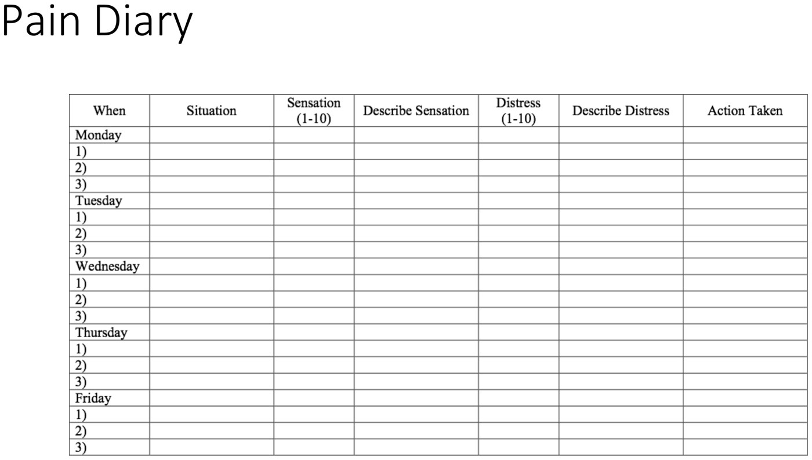
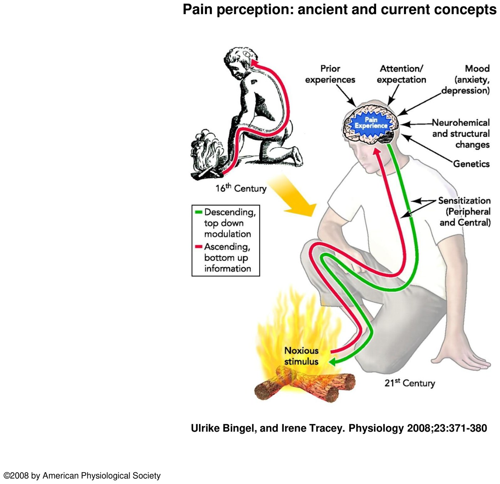
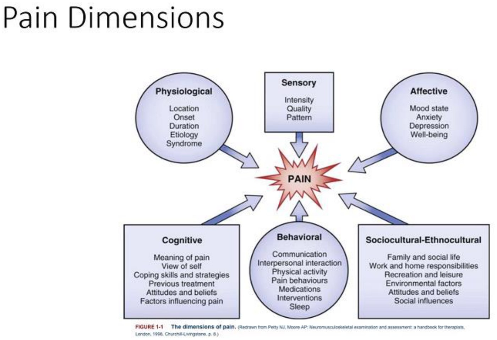
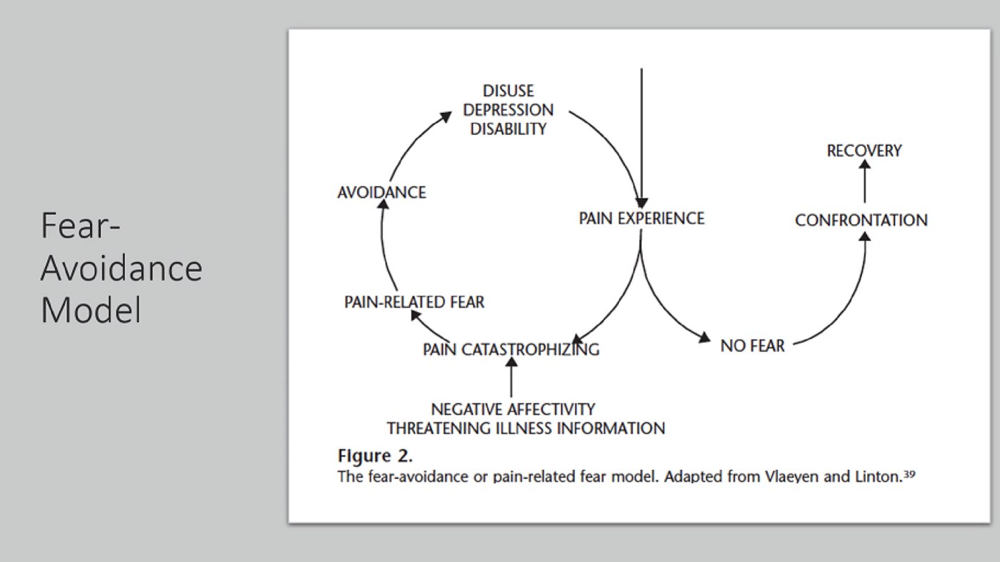
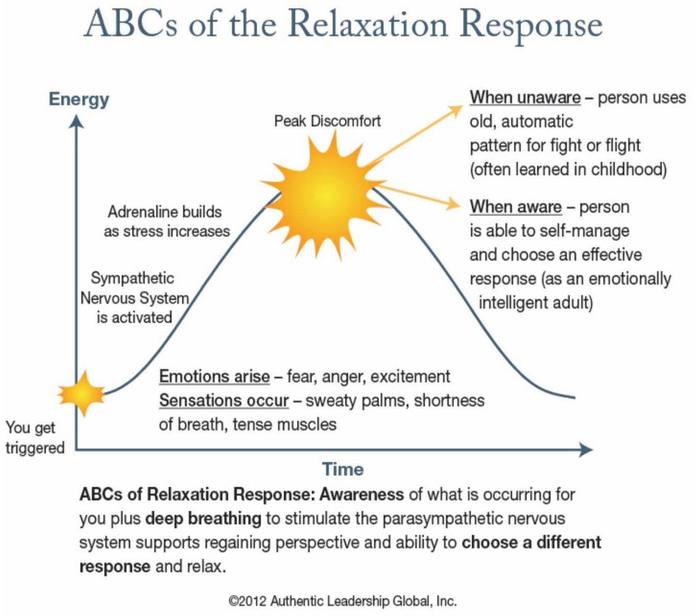

Psychological Factors in Managing Chronic Pain
- Pain is subjective and multidimensional: physiological, sensory, affective, cognitive, behavioural and sociocultural. Attention, expectation, mood and past pain all change it.
- Fear-avoidance: pain plus catastrophizing leads to fear, then avoidance, then disuse, depression and disability. Education that removes the fear lets the patient confront the activity and recover.
- Mood: major depression in 8–50% of chronic pain patients (it predicts persistence); anxiety symptoms in 50%; more substance use. Always ask about suicidal ideation.
- Somatic symptom disorder = distressing somatic symptoms plus excessive thoughts, feelings or behaviours about them, lasting > 6 months. Conversion = motor or sensory symptoms incompatible with a neurological disease.
- Gain: somatic symptom disorders = unconscious behaviour, internal gain. Factitious = conscious behaviour, unconscious gain (the sick role). Malingering = conscious behaviour for external gain.
- Management: multimodal, multidisciplinary, start with the patient (collaborative SMART goals, management not cure). CBT, pacing, graded exercise, and early return to work (before 12 weeks) as secondary prevention.
Learning Objectives
- Assess the interaction between psychological factors and chronic non-cancer pain.
- Assess the impact of affective disorders on pain, and vice versa.
- Identify presentations that may indicate somatic symptom and related disorders.
Dr. Jarmain (psychiatry): four recordings (75 min) built around one patient, Fred, plus a short review. The pain physiology, the drugs and opioids are in 10.7.
Meet Fred
The module's patient
Fred, 47, divorced, a sanitation worker, lives alone; his 12-year-old son visits every other weekend. A year ago his right lower leg was crushed between a garbage truck and a car: tibia and fibula fractures, external fixation, “good healing”. He's off work on WSIB, with no legal case.
Now: constant aching plus burning in the right leg and foot after too much use; waxing and waning muscle aches. Avoids narcotics; occasional acetaminophen or ibuprofen. Mood “okay”, but excessive worry: will he be disabled for life, keep up with his son, is a flare making the injury worse? The worry tenses his muscles and keeps him awake. No PTSD symptoms, no suicidal thoughts. He's cut back activity, gained about 20 lb and is smoking more.
Assessment
| Ask about | Why |
|---|---|
| Duration and nature of the pain | Its sensory character and pattern |
| Associated symptoms, physical and psychological, including suicidal ideation | Mood, anxiety, sleep, substance use |
| Past care: contacts, treatments, alternative therapies, medications, home remedies | What has and hasn't worked |
| Function | What the pain stops them doing |
- Investigations: review everything done; fill gaps only as clinically indicated.
- Pain charting: descriptive words, 0–10 numerical scores, faces scales (children), visual analogue scales, and multidimensional tools such as the McGill Pain Questionnaire. A pain assessment form lets the patient map the pain on a body outline and rate past treatments.
- Pain diary: records the situation, the sensation (1–10) and the distress (1–10) separately, plus what they did. Separating them teaches the patient that distress isn't only about pain intensity: thoughts, feelings and context drive it too.

Pain Is More Than the Signal
Descartes saw pain as hard-wired: a stimulus passively carried to the brain. Now we know it's shaped bottom up (sensitization) and top down (prior experience, attention and expectation, mood; depression and anxiety make pain worse).

Then and now. Bingel and Tracey, Physiology 2008, via the deck.
The six dimensions of pain. From the deck.| Dimension | Examples |
|---|---|
| Physiological | Location, onset, duration, cause |
| Sensory | Intensity, quality, pattern |
| Affective | Mood: anxiety, depression, well-being |
| Cognitive | What the pain means (childbirth vs a car crash), view of self, coping, beliefs |
| Behavioural | How pain is communicated, a spouse who rewards pain behaviour, pushing through vs avoiding, medications, help-seeking, sleep |
| Sociocultural | Family support or dismissal, work and home roles, leisure, environment; work is often key |
Pair the subjective story with objective indicators: pain behaviours (and whether they're out of proportion), physiological changes (pulse, BP, sweating) and, above all, change in function.
How psychology feeds pain: attention has to be on the stimulus for pain to be felt; fear can make that attention hypervigilant. Interpretation and beliefs (“hurt means harm”, “pain means stop”) drive avoidance, deconditioning and withdrawal. At work, individual factors (skills, meaning, support) and workplace factors (physical load, organization) combine to raise stress, fatigue and the risk of further injury.

Psychological Symptoms and the Differential
Emotional, behavioural and cognitive symptoms can just be part of the pain experience. When they cause significant distress, last, and impair function, work through the differential:
| Diagnosis | Key features |
|---|---|
| Adjustment disorder (DSM-5) | Emotional or behavioural symptoms within 3 months of an identifiable stressor (here, the pain or disability), with distress out of proportion and/or impaired function. Not another mental disorder or normal bereavement. Resolves within 6 months of the stressor (or its consequences) ending. |
| Psychological factors affecting other medical conditions | Psychological factors that change the course of the illness (timing), interfere with treatment (poor adherence) or add health risks; e.g. anxiety in COPD, depression in coronary disease |
| Comorbid depression | 8–50% of chronic pain patients have current major depression. It goes with more disability, more negative thoughts, higher pain intensity, less sense of control, more passive-avoidant coping, and predicts persistent pain. |
| Comorbid anxiety | 50% have anxiety symptoms; 19–30% an anxiety disorder (panic, GAD). After an accident, consider acute stress disorder or PTSD. |
| Substance use disorders | Higher than the general population (13.2% vs 7% in one study); more opioid dependence after injury |
| Somatic symptom and related disorders | Below |
About 20% of Canadians live with chronic pain, half of them for over 10 years. It's more common and more severe in groups facing social inequity: people in poverty, Indigenous Peoples, some ethnic communities and women (Canadian Pain Task Force, 2019). So assess the whole person.
Somatic Symptom and Related Disorders
Medically unexplained symptoms (MUS) are persistent bodily complaints with no adequate structural explanation after proper examination. They come as pain in different places, functional disturbance of organ systems, or fatigue, and may reflect physiological disturbance, emotional problems or a condition not yet diagnosed. They're common: 15–25% in primary care, 39–52% in specialist clinics, over 60% in neurology. Functional somatic syndromes (IBS, chronic fatigue syndrome, fibromyalgia) are similar: more common in women, with heavy overlap with anxiety and depression, and their cause is still unclear.
DSM-5 regrouped these to improve diagnostic accuracy (the DSM-IV somatoform categories overlapped), make them usable outside psychiatry, move away from mind-body dualism and the idea that symptoms “aren't real”, and focus on the distress and the abnormal thoughts, feelings and behaviours, not on whether the symptom is explained.
| Disorder | Criteria / key points |
|---|---|
| Somatic symptom disorder | A. One or more distressing or disruptive somatic symptoms. B. Excessive thoughts, feelings and/or behaviours about them. C. Symptomatic state > 6 months (any one symptom needn't be constant). About 5–7% of the population; 20–25% of primary care patients with acute somatic symptoms go on to develop it. Linked to hypervigilance to body sensations, childhood neglect or sexual abuse, chaotic lifestyle, substance misuse, personality disorders. Risk: repeated care-seeking and unnecessary tests. |
| Illness anxiety disorder | Part of the same group |
| Conversion disorder (functional neurological symptom disorder) | One or more symptoms of altered voluntary motor or sensory function (weakness, abnormal movements, swallowing or speech symptoms, attacks or seizures, sensory loss). Findings are incompatible with recognized neurological or medical disease (e.g. a deficit that doesn't follow anatomy). Not better explained by another disorder; causes distress or impairment. Specify acute (< 6 months) or persistent, and with or without a stressor. A diagnosis of exclusion: some patients later turn out to have a neurological disease. |
| Psychological factors affecting other medical conditions | See above |
| Factitious disorder (Munchausen) | Moved into this chapter in DSM-5. Imposed on self or on another (formerly “by proxy”). Presents self or another as ill or injured, with deception even without obvious external reward (e.g. injecting insulin to cause hypoglycemia). |
| Behaviour | Motivation | |
|---|---|---|
| Somatic symptom and related disorders | Unconscious | Inner psychic gain (unconscious) |
| Factitious disorder | Conscious (they know what they're doing) | Unconscious: the sick role |
| Malingering (not a mental disorder) | Conscious feigning | External gain (e.g. insurance fraud) |
Telling factitious disorder or malingering apart: a thorough history with a clear chronology; watch for inconsistent, selective or misleading information, symptoms out of proportion, gaps between the event and symptom onset, and many tests and treatments with little benefit. Get collateral (other notes and assessments) and look for triangulation. On exam, look for inconsistent findings and pain behaviour out of proportion. Neuropsychological testing sometimes helps. Malingering happens, but most patients with somatic symptoms aren't malingering: take their experience at face value.
Management
No single intervention is enough.
The pain-clinic team (see 10.7).
Collaborative, realistic measurable (SMART) goals, management not cure. By now they're often frustrated by many doctors and tests: start where they are, using motivational interviewing.
| Domain | Options |
|---|---|
| Biological: physical | TENS, heat and cold, acupuncture and acupressure, massage, physiotherapy, injections and blocks. Modest benefit, but it matters to some patients. |
| Biological: drugs | Stepwise (WHO pain ladder): non-opioid ± adjuvant (NSAID, acetaminophen); then weak opioid + non-opioid (e.g. Tylenol #3); then strong opioid + non-opioid (morphine + acetaminophen). Adjuvants: analgesic antidepressants, anticonvulsants. Avoid opioids where possible. |
| Psychological: CBT | Links thoughts, feelings and behaviours to pain; aims at managing, not curing. Individual or (especially) group; limited RCTs but effective (e.g. 53% of chronic headache patients improved). |
| Other psychological | Psychodynamic therapy as a second-line option for lifelong patterns. Relaxation and meditation: slow breathing switches on the parasympathetic system. Avoid progressive muscle relaxation in muscular pain (they can tense, not release); use breathing, mindfulness, visualization. |
| Rehabilitative | Education and adaptation (ergonomics, new ways to do old things: a foot on the lower cupboard while doing dishes); pacing (no boom-and-bust); exercise (aerobic, stretching and strengthening, meditative), starting gradually; vocational planning and work modification |
| CBT pieces | What they are |
|---|---|
| Cognitive distortions (“stinking thinking”) | Mental filter (only noticing evidence that pain means harm), catastrophizing (something terrible will happen), emotional reasoning (it feels harmful, so it is) |
| Common components | Patient and family education; contingency management (ABCs: antecedents, behaviours, consequences); relaxation; problem-solving; communication; distraction; behavioural activation (meaningful activities); cognitive restructuring |

Fred: diagnosis and plan
Fred's pain is real; his worry (catastrophizing, all-or-nothing thinking about never working again) tenses him, disturbs sleep and drives avoidance, weight gain and smoking. No PTSD, no depression, no suicidality. The module's three key interventions: CBT for the anxiety and catastrophizing; psychoeducation on pacing (manageable active periods alternating with rest); and a graduated exercise program.
Secondary Prevention and General Strategies
| Secondary prevention | How |
|---|---|
| Early | Time is vital: act before lifestyle is disrupted (before 12 weeks). A return to work, even modified, prevents later disability. |
| Active | Focus on health and behaviour, not medical problems: daily activity, training, return to work, daily structure and sleep |
| Patient as partner | It can't be cured and needs behaviour change, so engage the patient |
| Communication | Liaise (with permission) with the workplace, family, insurer and other caregivers |
| Follow-up | Reassess and adjust regularly; visits about goals, not pain complaints |
- One physician, regular visits: build trust.
- Goal-directed: celebrate steps forward.
- Understand the communication: distress is often expressed through physical symptoms.
- Limit investigations and operations, but remember these patients still get new acute illnesses.
- Motivational interviewing.
- Monitor yourself: watch your countertransference; if you can't stay objective and empathic, refer on.
Built from Dr. Jarmain's “Chronic Pain 2” deck, its four recordings and the module's text, case questions and review. The pain assessment form, the work-factors model and the wellness diagram are left out (too small to read). Note: the module's text gives major depression as 8–50% of chronic pain patients, while 10.7's slide says depression in 5–87%. They're different measures (major depression vs any depression), so the ranges don't conflict.